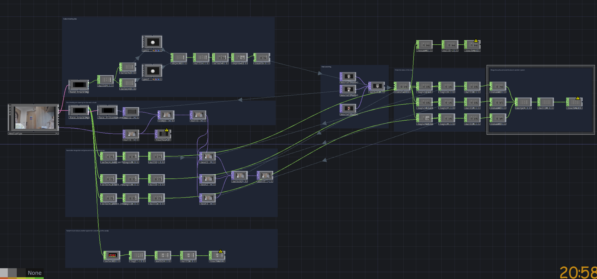
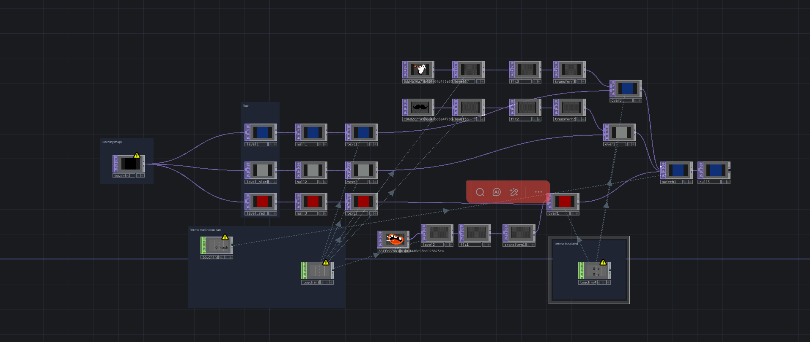

Masks Across Time
A project created in collaboration with a partner, connecting two interactive artworks over a network.


PROJECT THEME
Collaborate with a partner to create a digital artwork that draws from a theme introduced in Ideas in Art and Technology that interacts with another remote digital artwork on a shared network that 'plays' whether a user is interacting or not. (Example technologies: Python, Node.Js, Touchdesigner, JS, OSC, Websockets, UDP)
Description of project
This project is a network interactive mask work composed of two computers, corresponding to "the past" and "the modern era". The past end uses face recognition and gesture tracking to superimpose traditional Chinese opera masks on the audience's faces, and generates corresponding textual descriptions based on facial expressions; the modern end interacts with it, converting the traditional masks into contemporary digital filters and online emojis. Thus, it presents the facial expression styles of different eras.
Technologies used
This project utilizes TouchDesigner as the real-time interaction and visual presentation platform, integrating MediaPipe, hand_tracking, and face_tracking plugins to achieve functions such as face and gesture tracking as well as expression recognition. Additionally, the TouchIn and TouchOut nodes are used to transfer data between two computers, enabling real-time connection and interaction across devices.
AND PIPELINE
Technical workflow
and pipeline
Past end:
- Prepare 3 pictures of traditional Chinese opera masks representing different personalities.
- Obtain hand and facial data from the camera using the MediaPipe, hand_tracking, and face_tracking plugins.
- Use the identified face positions to superimpose the opera masks on the faces of the audience.
- Select different expression recognition methods based on the corresponding personalities of the masks.
- Generate corresponding text content based on the current mask status and display it on the screen.
- The system will send the current mask status and related control data to another computer via TouchOut.
Modern end:
- Receive mask status and control data from the past end through TouchIn.
- Prepare three corresponding network expression materials.
- Generate corresponding digital filters, text, and network expressions based on the mask status.
- Both ports remain continuously running and achieve real-time interaction regardless of whether there are users involved.
Artist Statement
This project originated from our interest in Chinese traditional culture and took the Beijing Opera face patterns as the starting point for creation. In traditional Chinese operas, masks and face patterns are not only used for performances but also serve as a way to express identity, emotions, and social roles through facial images. I introduced these traditional face patterns into the interactive system and corresponded them with contemporary common digital filters and online expressions, attempting to establish connections between different media. By allowing the audience to experience the switching of masks during the interaction, I aimed to present how Chinese traditional culture is re-viewed and understood in the new technological environment, and to trigger the audience's reflection on the expression methods of facial images in different eras.